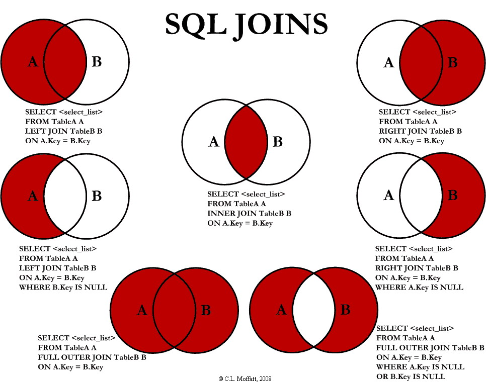

MySQL 关系数据库
Table of Contents
1 简介
MySQL 是一个关系型数据库管理系统，由瑞典 MySQL AB 公司开发，目前属于 Oracle 旗 下产品。MySQL 是最流行的关系型数据库管理系统之一，在 WEB 应用方面，MySQL 是最好 的 RDBMS (Relational Database Management System，关系数据库管理系统) 应用软件 之一。
1.1 安装 MySQL
1.1.1 Mac
Mac 上当然是使用 Homebrew 安装最省心了，
brew install mysql@5.7 # 初始化数据库 sudo mysql_secure_installation # 添加到 homebrew 的服务 brew services start mysql@5.7
使用命令行登录方法：
% mysql -uroot -p Enter password: Welcome to the MySQL monitor. Commands end with ; or \g. Your MySQL connection id is 902 Server version: 5.7.25 Homebrew Copyright (c) 2000, 2019, Oracle and/or its affiliates. All rights reserved. Oracle is a registered trademark of Oracle Corporation and/or its affiliates. Other names may be trademarks of their respective owners. Type 'help;' or '\h' for help. Type '\c' to clear the current input statement. mysql>
mysql -h <host> -u <user> -p <password> <database>
1.1.3 Unix
Mysql 依赖 libaio 库，在安装 mysql 的机器时需要提前安装 libaio 库。
apt-get install libaio1 apt-get install mysql-client mysql-server
1.1.4 Docker
下载 mysql 5.7 的镜像
docker pull mysql:5.7
启动 mysql 镜像即可
# 启动裸 root 用户的容器 docker run -d --restart always --name mysql \ -e 'MYSQL_ROOT_PASSWORD=root' \ -p 3306:3306 mysql:5.7 # 启动带有初始化数据库的容器 docker run -d --restart always --name mysql \ -e 'MYSQL_ROOT_PASSWORD=root' \ -e 'MYSQL_USER=username' \ -e 'MYSQL_PASSWORD=password' \ -e 'MYSQL_DATABASE=database' \ -p 3306:3306 mysql:5.7
1.2 参考手册
1.3 帮助系统 - \h 命令
mysql> \h
For information about MySQL products and services, visit:
http://www.mysql.com/
For developer information, including the MySQL Reference Manual, visit:
http://dev.mysql.com/
To buy MySQL Enterprise support, training, or other products, visit:
https://shop.mysql.com/
List of all MySQL commands:
Note that all text commands must be first on line and end with ';'
? (\?) Synonym for `help'.
clear (\c) Clear the current input statement.
connect (\r) Reconnect to the server. Optional arguments are db and host.
delimiter (\d) Set statement delimiter.
edit (\e) Edit command with $EDITOR.
ego (\G) Send command to mysql server, display result vertically.
exit (\q) Exit mysql. Same as quit.
go (\g) Send command to mysql server.
help (\h) Display this help.
nopager (\n) Disable pager, print to stdout.
notee (\t) Don't write into outfile.
pager (\P) Set PAGER [to_pager]. Print the query results via PAGER.
print (\p) Print current command.
prompt (\R) Change your mysql prompt.
quit (\q) Quit mysql.
rehash (\#) Rebuild completion hash.
source (\.) Execute an SQL script file. Takes a file name as an argument.
status (\s) Get status information from the server.
system (\!) Execute a system shell command.
tee (\T) Set outfile [to_outfile]. Append everything into given outfile.
use (\u) Use another database. Takes database name as argument.
charset (\C) Switch to another charset. Might be needed for processing binlog with multi-byte charsets.
warnings (\W) Show warnings after every statement.
nowarning (\w) Don't show warnings after every statement.
resetconnection(\x) Clean session context.
For server side help, type 'help contents'
mysql> \h show
Name: 'SHOW'
Description:
SHOW has many forms that provide information about databases, tables,
columns, or status information about the server. This section describes
those following:
SHOW {BINARY | MASTER} LOGS
SHOW BINLOG EVENTS [IN 'log_name'] [FROM pos] [LIMIT [offset,] row_count]
SHOW CHARACTER SET [like_or_where]
SHOW COLLATION [like_or_where]
SHOW [FULL] COLUMNS FROM tbl_name [FROM db_name] [like_or_where]
SHOW CREATE DATABASE db_name
SHOW CREATE EVENT event_name
SHOW CREATE FUNCTION func_name
SHOW CREATE PROCEDURE proc_name
SHOW CREATE TABLE tbl_name
SHOW CREATE TRIGGER trigger_name
SHOW CREATE VIEW view_name
SHOW DATABASES [like_or_where]
SHOW ENGINE engine_name {STATUS | MUTEX}
SHOW [STORAGE] ENGINES
SHOW ERRORS [LIMIT [offset,] row_count]
SHOW EVENTS
SHOW FUNCTION CODE func_name
SHOW FUNCTION STATUS [like_or_where]
SHOW GRANTS FOR user
SHOW INDEX FROM tbl_name [FROM db_name]
SHOW MASTER STATUS
SHOW OPEN TABLES [FROM db_name] [like_or_where]
SHOW PLUGINS
SHOW PROCEDURE CODE proc_name
SHOW PROCEDURE STATUS [like_or_where]
SHOW PRIVILEGES
SHOW [FULL] PROCESSLIST
SHOW PROFILE [types] [FOR QUERY n] [OFFSET n] [LIMIT n]
SHOW PROFILES
SHOW RELAYLOG EVENTS [IN 'log_name'] [FROM pos] [LIMIT [offset,] row_count]
SHOW SLAVE HOSTS
SHOW SLAVE STATUS [FOR CHANNEL channel]
SHOW [GLOBAL | SESSION] STATUS [like_or_where]
SHOW TABLE STATUS [FROM db_name] [like_or_where]
SHOW [FULL] TABLES [FROM db_name] [like_or_where]
SHOW TRIGGERS [FROM db_name] [like_or_where]
SHOW [GLOBAL | SESSION] VARIABLES [like_or_where]
SHOW WARNINGS [LIMIT [offset,] row_count]
like_or_where:
LIKE 'pattern'
| WHERE expr
If the syntax for a given SHOW statement includes a LIKE 'pattern'
part, 'pattern' is a string that can contain the SQL % and _ wildcard
characters. The pattern is useful for restricting statement output to
matching values.
Several SHOW statements also accept a WHERE clause that provides more
flexibility in specifying which rows to display. See
http://dev.mysql.com/doc/refman/5.7/en/extended-show.html.
URL: http://dev.mysql.com/doc/refman/5.7/en/show.html
mysql> \h show create table
Name: 'SHOW CREATE TABLE'
Description:
Syntax:
SHOW CREATE TABLE tbl_name
Shows the CREATE TABLE statement that creates the named table. To use
this statement, you must have some privilege for the table. This
statement also works with views.
SHOW CREATE TABLE quotes table and column names according to the value
of the sql_quote_show_create option. See
http://dev.mysql.com/doc/refman/5.7/en/server-system-variables.html.
For information about how CREATE TABLE statements are stored by MySQL,
see
http://dev.mysql.com/doc/refman/5.7/en/create-table-statement-retention
.html.
URL: http://dev.mysql.com/doc/refman/5.7/en/show-create-table.html
Examples:
mysql> SHOW CREATE TABLE t\G
*************************** 1. row ***************************
Table: t
Create Table: CREATE TABLE `t` (
`id` int(11) NOT NULL AUTO_INCREMENT,
`s` char(60) DEFAULT NULL,
PRIMARY KEY (`id`)
) ENGINE=InnoDB DEFAULT CHARSET=latin1
mysql> \h alter table
Name: 'ALTER TABLE'
Description:
Syntax:
ALTER TABLE tbl_name
[alter_specification [, alter_specification] ...]
[partition_options]
alter_specification:
table_options
| ADD [COLUMN] col_name column_definition
[FIRST | AFTER col_name]
| ADD [COLUMN] (col_name column_definition,...)
| ADD {INDEX|KEY} [index_name]
[index_type] (key_part,...) [index_option] ...
| ADD [CONSTRAINT [symbol]] PRIMARY KEY
[index_type] (key_part,...) [index_option] ...
| ADD [CONSTRAINT [symbol]]
UNIQUE [INDEX|KEY] [index_name]
[index_type] (key_part,...) [index_option] ...
| ADD FULLTEXT [INDEX|KEY] [index_name]
(key_part,...) [index_option] ...
| ADD SPATIAL [INDEX|KEY] [index_name]
(key_part,...) [index_option] ...
| ADD [CONSTRAINT [symbol]]
FOREIGN KEY [index_name] (col_name,...)
reference_definition
| ALGORITHM [=] {DEFAULT|INPLACE|COPY}
| ALTER [COLUMN] col_name {SET DEFAULT literal | DROP DEFAULT}
| CHANGE [COLUMN] old_col_name new_col_name column_definition
[FIRST|AFTER col_name]
| [DEFAULT] CHARACTER SET [=] charset_name [COLLATE [=] collation_name]
| CONVERT TO CHARACTER SET charset_name [COLLATE collation_name]
| {DISABLE|ENABLE} KEYS
| {DISCARD|IMPORT} TABLESPACE
| DROP [COLUMN] col_name
| DROP {INDEX|KEY} index_name
| DROP PRIMARY KEY
| DROP FOREIGN KEY fk_symbol
| FORCE
| LOCK [=] {DEFAULT|NONE|SHARED|EXCLUSIVE}
| MODIFY [COLUMN] col_name column_definition
[FIRST | AFTER col_name]
| ORDER BY col_name [, col_name] ...
| RENAME {INDEX|KEY} old_index_name TO new_index_name
| RENAME [TO|AS] new_tbl_name
| {WITHOUT|WITH} VALIDATION
| ADD PARTITION (partition_definition)
| DROP PARTITION partition_names
| DISCARD PARTITION {partition_names | ALL} TABLESPACE
| IMPORT PARTITION {partition_names | ALL} TABLESPACE
| TRUNCATE PARTITION {partition_names | ALL}
| COALESCE PARTITION number
| REORGANIZE PARTITION partition_names INTO (partition_definitions)
| EXCHANGE PARTITION partition_name WITH TABLE tbl_name [{WITH|WITHOUT} VALIDATION]
| ANALYZE PARTITION {partition_names | ALL}
| CHECK PARTITION {partition_names | ALL}
| OPTIMIZE PARTITION {partition_names | ALL}
| REBUILD PARTITION {partition_names | ALL}
| REPAIR PARTITION {partition_names | ALL}
| REMOVE PARTITIONING
| UPGRADE PARTITIONING
key_part:
col_name [(length)] [ASC | DESC]
index_type:
USING {BTREE | HASH}
index_option:
KEY_BLOCK_SIZE [=] value
| index_type
| WITH PARSER parser_name
| COMMENT 'string'
table_options:
table_option [[,] table_option] ...
table_option:
AUTO_INCREMENT [=] value
| AVG_ROW_LENGTH [=] value
| [DEFAULT] CHARACTER SET [=] charset_name
| CHECKSUM [=] {0 | 1}
| [DEFAULT] COLLATE [=] collation_name
| COMMENT [=] 'string'
| COMPRESSION [=] {'ZLIB'|'LZ4'|'NONE'}
| CONNECTION [=] 'connect_string'
| {DATA|INDEX} DIRECTORY [=] 'absolute path to directory'
| DELAY_KEY_WRITE [=] {0 | 1}
| ENCRYPTION [=] {'Y' | 'N'}
| ENGINE [=] engine_name
| INSERT_METHOD [=] { NO | FIRST | LAST }
| KEY_BLOCK_SIZE [=] value
| MAX_ROWS [=] value
| MIN_ROWS [=] value
| PACK_KEYS [=] {0 | 1 | DEFAULT}
| PASSWORD [=] 'string'
| ROW_FORMAT [=] {DEFAULT|DYNAMIC|FIXED|COMPRESSED|REDUNDANT|COMPACT}
| STATS_AUTO_RECALC [=] {DEFAULT|0|1}
| STATS_PERSISTENT [=] {DEFAULT|0|1}
| STATS_SAMPLE_PAGES [=] value
| TABLESPACE tablespace_name [STORAGE {DISK|MEMORY|DEFAULT}]
| UNION [=] (tbl_name[,tbl_name]...)
partition_options:
(see CREATE TABLE options)
ALTER TABLE changes the structure of a table. For example, you can add
or delete columns, create or destroy indexes, change the type of
existing columns, or rename columns or the table itself. You can also
change characteristics such as the storage engine used for the table or
the table comment.
o To use ALTER TABLE, you need ALTER, CREATE, and INSERT privileges for
the table. Renaming a table requires ALTER and DROP on the old table,
ALTER, CREATE, and INSERT on the new table.
o Following the table name, specify the alterations to be made. If none
are given, ALTER TABLE does nothing.
o The syntax for many of the permissible alterations is similar to
clauses of the CREATE TABLE statement. column_definition clauses use
the same syntax for ADD and CHANGE as for CREATE TABLE. For more
information, see [HELP CREATE TABLE].
o The word COLUMN is optional and can be omitted.
o Multiple ADD, ALTER, DROP, and CHANGE clauses are permitted in a
single ALTER TABLE statement, separated by commas. This is a MySQL
extension to standard SQL, which permits only one of each clause per
ALTER TABLE statement. For example, to drop multiple columns in a
single statement, do this:
ALTER TABLE t2 DROP COLUMN c, DROP COLUMN d;
o If a storage engine does not support an attempted ALTER TABLE
operation, a warning may result. Such warnings can be displayed with
SHOW WARNINGS. See [HELP SHOW WARNINGS]. For information on
troubleshooting ALTER TABLE, see
http://dev.mysql.com/doc/refman/5.7/en/alter-table-problems.html.
o For information about generated columns, see
http://dev.mysql.com/doc/refman/5.7/en/alter-table-generated-columns.
html.
o For usage examples, see
http://dev.mysql.com/doc/refman/5.7/en/alter-table-examples.html.
o With the mysql_info() C API function, you can find out how many rows
were copied by ALTER TABLE. See
http://dev.mysql.com/doc/refman/5.7/en/mysql-info.html.
URL: http://dev.mysql.com/doc/refman/5.7/en/alter-table.html
mysql >
2 数据库操作
2.1 查看数据库基本信息
mysql> status -------------- mysql Ver 14.14 Distrib 5.7.23, for osx10.12 (x86_64) using EditLine wrapper Connection id: 2 Current database: sellsys Current user: root@172.17.0.1 SSL: Cipher in use is DHE-RSA-AES256-SHA Current pager: less Using outfile: '' Using delimiter: ; Server version: 5.7.26 MySQL Community Server (GPL) Protocol version: 10 Connection: 127.0.0.1 via TCP/IP Server characterset: latin1 Db characterset: latin1 Client characterset: utf8 Conn. characterset: utf8 TCP port: 3306 Uptime: 18 min 40 sec Threads: 2 Questions: 82 Slow queries: 0 Opens: 139 Flush tables: 1 Open tables: 130 Queries per second avg: 0.073 -------------- mysql> SELECT database(); +------------+ | database() | +------------+ | sellsys | +------------+ 1 row in set (0.01 sec) mysql> SELECT now(); +---------------------+ | now() | +---------------------+ | 2019-07-05 20:26:38 | +---------------------+ 1 row in set (0.00 sec) mysql> SELECT user(); +-----------------------+ | user() | +-----------------------+ | selladmin@192.168.1.5 | +-----------------------+ 1 row in set (0.01 sec) mysql> SELECT version(); +-----------+ | version() | +-----------+ | 5.7.25 | +-----------+ 1 row in set (0.00 sec) mysql> SHOW PROCESSLIST; -- 查看哪些线程正在运行 +-----+-----------+-------------------+---------+---------+------+----------+------------------+ | Id | User | Host | db | Command | Time | State | Info | +-----+-----------+-------------------+---------+---------+------+----------+------------------+ | 900 | selladmin | 192.168.1.5:52231 | sellsys | Query | 0 | starting | SHOW PROCESSLIST | +-----+-----------+-------------------+---------+---------+------+----------+------------------+ 1 row in set (0.00 sec) mysql> SHOW DATABASES; +--------------------+ | Database | +--------------------+ | information_schema | | sellsys | +--------------------+ 2 rows in set (0.01 sec) mysql> SHOW CREATE DATABASE sellsys; +----------+---------------------------------------------------------------------+ | Database | Create Database | +----------+---------------------------------------------------------------------+ | sellsys | CREATE DATABASE `sellsys` /*!40100 DEFAULT CHARACTER SET utf8mb4 */ | +----------+---------------------------------------------------------------------+ 1 row in set (0.00 sec)
2.2 查看数据库中所有的表
mysql> SHOW TABLES; +-------------------+ | Tables_in_sellsys | +-------------------+ | customers | | order_items | | orders | | product_notes | | products | | vendors | +-------------------+ 6 rows in set (0.02 sec)
2.3 创建/删除数据库
为了节约存储空间，MySQL 的编码中 utf8 是三个字节的编码，utf8mb4 才是真正的四 字节。如果设置数据库编码为 utf8 会导致 emoji 无法存入数据库，所以最好默认设置 utf8mb4 编码。
CREATE DATABASE [IF NOT EXISTS] dbname DEFAULT CHARACTER SET utf8mb4; DROP DATABASE [IF EXISTS] <dbname>;
2.4 字符编码和校对集
数据编码与客户端编码不需一致
-- 查看所有字符集编码项 SHOW VARIABLES LIKE 'character_set_%'; -- character_set_client 客户端向服务器发送数据时使用的编码 -- character_set_results 服务器端将结果返回给客户端所使用的编码 -- character_set_connection 连接层编码 -- 设置变量值 SET variable_name = value; SET character_set_client = utf8; SET character_set_results = utf8; SET character_set_connection = utf8; SET NAMES utf8; -- 相当于上述三个设置 -- 校对集, 校对集用以排序 -- 查看所有字符集 SHOW CHARACTER SET [LIKE 'pattern']/SHOW CHARSET [LIKE 'pattern']; -- 查看所有校对集 SHOW COLLATION [LIKE 'pattern']; -- 设置字符集编码 CHARSET charset_name; -- 设置校对集编码 COLLATE collate_name;
Mac 下 client 编码不一致导致插入数据出现问题的解决案例
mysql> insert cust (name) values('函数');
ERROR 1366 (HY000): Incorrect string value: '\xE5\x87\xBD\xE6\x95\xB0' for column 'name' at row 1
mysql> status
--------------
mysql Ver 14.14 Distrib 5.7.23, for osx10.12 (x86_64) using EditLine wrapper
Connection id: 2
Current database: sellsys
Current user: root@172.17.0.1
SSL: Cipher in use is DHE-RSA-AES256-SHA
Current pager: less
Using outfile: ''
Using delimiter: ;
Server version: 5.7.26 MySQL Community Server (GPL)
Protocol version: 10
Connection: 127.0.0.1 via TCP/IP
Server characterset: latin1
Db characterset: latin1
Client characterset: utf8
Conn. characterset: utf8
TCP port: 3306
Uptime: 18 min 40 sec
Threads: 2 Questions: 82 Slow queries: 0 Opens: 139 Flush tables: 1 Open tables: 130 Queries per second avg: 0.073
--------------
mysql> SHOW VARIABLES LIKE 'character_set_%';
+--------------------------+----------------------------+
| Variable_name | Value |
+--------------------------+----------------------------+
| character_set_client | utf8 |
| character_set_connection | utf8 |
| character_set_database | latin1 |
| character_set_filesystem | binary |
| character_set_results | utf8 |
| character_set_server | latin1 |
| character_set_system | utf8 |
| character_sets_dir | /usr/share/mysql/charsets/ |
+--------------------------+----------------------------+
8 rows in set (0.01 sec)
mysql> set character_set_database = utf8;
Query OK, 0 rows affected, 1 warning (0.00 sec)
mysql> set character_set_server = utf8;
Query OK, 0 rows affected (0.00 sec)
mysql> SHOW VARIABLES LIKE 'character_set_%';
+--------------------------+----------------------------+
| Variable_name | Value |
+--------------------------+----------------------------+
| character_set_client | utf8 |
| character_set_connection | utf8 |
| character_set_database | utf8 |
| character_set_filesystem | binary |
| character_set_results | utf8 |
| character_set_server | utf8 |
| character_set_system | utf8 |
| character_sets_dir | /usr/share/mysql/charsets/ |
+--------------------------+----------------------------+
8 rows in set (0.01 sec)
mysql> status
--------------
mysql Ver 14.14 Distrib 5.7.23, for osx10.12 (x86_64) using EditLine wrapper
Connection id: 2
Current database: sellsys
Current user: root@172.17.0.1
SSL: Cipher in use is DHE-RSA-AES256-SHA
Current pager: less
Using outfile: ''
Using delimiter: ;
Server version: 5.7.26 MySQL Community Server (GPL)
Protocol version: 10
Connection: 127.0.0.1 via TCP/IP
Server characterset: utf8
Db characterset: utf8
Client characterset: utf8
Conn. characterset: utf8
TCP port: 3306
Uptime: 20 min 50 sec
Threads: 2 Questions: 91 Slow queries: 0 Opens: 140 Flush tables: 1 Open tables: 131 Queries per second avg: 0.072
--------------
mysql> drop database sellsys;
Query OK, 1 row affected (0.02 sec)
mysql> create database aa;
Query OK, 1 row affected (0.00 sec)
mysql> show create database aa;
+----------+-------------------------------------------------------------+
| Database | Create Database |
+----------+-------------------------------------------------------------+
| aa | CREATE DATABASE `aa` /*!40100 DEFAULT CHARACTER SET utf8 */ |
+----------+-------------------------------------------------------------+
1 row in set (0.00 sec)
mysql> status
--------------
mysql Ver 14.14 Distrib 5.7.23, for osx10.12 (x86_64) using EditLine wrapper
Connection id: 2
Current database:
Current user: root@172.17.0.1
SSL: Cipher in use is DHE-RSA-AES256-SHA
Current pager: less
Using outfile: ''
Using delimiter: ;
Server version: 5.7.26 MySQL Community Server (GPL)
Protocol version: 10
Connection: 127.0.0.1 via TCP/IP
Server characterset: utf8
Db characterset: utf8
Client characterset: utf8
Conn. characterset: utf8
TCP port: 3306
Uptime: 22 min 9 sec
Threads: 2 Questions: 99 Slow queries: 0 Opens: 140 Flush tables: 1 Open tables: 130 Queries per second avg: 0.074
--------------
mysql> use aa;
Database changed
mysql> create table cust(id int primary key auto_increment, name varchar(32));
Query OK, 0 rows affected (0.03 sec)
mysql> show create table cust\G
*************************** 1. row ***************************
Table: cust
Create Table: CREATE TABLE `cust` (
`id` int(11) NOT NULL AUTO_INCREMENT,
`name` varchar(32) DEFAULT NULL,
PRIMARY KEY (`id`)
) ENGINE=InnoDB AUTO_INCREMENT=2 DEFAULT CHARSET=utf8
1 row in set (0.00 sec)
mysql> insert cust (name) values('函数');
Query OK, 1 row affected (0.01 sec)
mysql> select * from cust;
+----+--------+
| id | name |
+----+--------+
| 1 | 函数 |
+----+--------+
1 row in set (0.01 sec)
mysql>
3 表操作
3.1 创建表
TEMPORARY: 临时表，会话结束时表自动消失- 列定义：每个字段必须有数据类型，最后一个字段后不能有逗号
- 字符集:
CHARSET=charset_name如果表没有设定，则使用数据库字符集 - 存储引擎:
ENGINE=engine_name表在管理数据时采用的不同的数据结构，结构不同 会导致处理方式、提供的特性操作等不同常见的引擎：InnoDB MyISAM Memory/Heap BDB Merge Example CSV MaxDB Archive 不同的引擎在保存表的结构和数据时采用不同 的方式- MyISAM 表文件含义：.frm 表定义，.MYD 表数据，.MYI 表索引
- InnoDB 表文件含义：.frm 表定义，表空间数据和日志文件
SHOW ENGINES:显示存储引擎的状态信息SHOW ENGINE engine_name {LOGS|STATUS}:显示存储引擎的日志或状态信息
- 数据文件目录
DATA DIRECTORY = 'folder' - 索引文件目录
INDEX DIRECTORY = 'folder' - 表注释
COMMENT = 'string'
CREATE [TEMPORARY] TABLE[ IF NOT EXISTS] [dbname.]tabname ( -- columns defines colname dbtype [NOT NULL | NULL] [DEFAULT DEFAULT_VALUE] [AUTO_INCREMENT] [UNIQUE [KEY] | [PRIMARY] KEY] [COMMENT 'STRING'] ) [others]; -- example CREATE TABLE `customers` ( `cust_id` int(11) NOT NULL AUTO_INCREMENT, `cust_name` char(50) NOT NULL, `cust_address` char(50) DEFAULT NULL, `cust_city` char(50) DEFAULT NULL, `cust_state` char(5) DEFAULT NULL, `cust_zip` char(10) DEFAULT NULL, `cust_country` char(50) DEFAULT NULL, `cust_contact` char(50) DEFAULT NULL, `cust_email` char(255) DEFAULT NULL, PRIMARY KEY (`cust_id`) ) ENGINE=InnoDB DEFAULT CHARSET=utf8mb4;
3.1.1 数据类型
- 整型
int(M): M 表示总位数- 默认存在符号位, 使用
unsigned来显示指定成无符号存储 - 显示宽度，如果某个数不够定义字段时设置的位数，则前面以 0 补填,
zerofill属性修改 例：~int(5)~ 插入一个数 '123' , 补填后为 '00123' - 在满足要求的情况下，越小越好。
- 1 表示真，0 表示假。MySQL 没有布尔类型，通过整型 0 和 1 表示。常用
tinyint(1)表示布尔型。
类型 字节 范围（有符号位） 无符号位 tinyint 1 字节 -128 ~ 127 0 ~ 255 smallint 2 字节 -32768 ~ 32767 mediumint 3 字节 -8388608 ~ 8388607 int 4 字节 bigint 8 字节 - 浮点型
- 浮点型既支持符号位
unsigned属性，也支持显示宽度zerofill属性。不同 于整型，前后均会补填 0. 定义浮点型时，需指定总位数和小数位数。 float(M, D)double(M, D): M 表示总位数，D 表示小数位数。 M 和 D 的大 小 会决定浮点数的范围。不同于整型的固定范围。M 既表示总位数（不包括小数点 和正 负号），也表示显示宽度（所有显示符号均包括）。支持科学计数法表示。浮 点数表 示近似值。
类型 字节 范围 float 4 字节 double 8 字节 - 浮点型既支持符号位
- 定点型
- decimal 可变长度。
decimal(M, D)M 也表示总位数，D表示小数位数。保存一 个精确的数值，不会发生数据的改变，不同于浮点数的四舍五入。将浮点数转换为 字符串来保存，每 9 位数字保存为 4 个字节。
- decimal 可变长度。
- 字符串
- char 定长字符串，速度快，但浪费空间
- varchar 变长字符串，速度慢，但节省空间 M 表示能存储的最大长度，此长度是字
符数，非字节数。 不同的编码，所占用的空间不同。char 最多 255 个字符，与编
码无关。varchar 最多 65535 字符，与编码有关。 一条有效记录最大不能超过
65535 个字节。utf8 最大 为 21844 个字符，gbk 最大为 32766 个字符，latin1
最大为 65532 个字符 varchar 是变长的，需要利用存储空间保存 varchar 的长度，
如果数据小于 255 个 字节，则采用一个字节来保存长度，反之需要两个字节来保
存。varchar 的最大有效 长度由最大行大小和使用的字符集确定。最大有效长度是
65532 字节，因为在 varchar 存字符串时，第一个字节是空的，不存在任何数据，
然后还需两个字节来存 放字符串的长度，所以有效长度是 64432-1-2=65532 字节。
例：若一个表定义为
CREATE TABLE tb(c1 int, c2 char(30), c3 varchar(N)) charset=utf8;问 N 的最 大值是多少？ 答：(65535-1-2-4-30*3)/3 - blob 二进制字符串（字节字符串）tinyblob, blob, mediumblob, longblob
- text 非二进制字符串（字符字符串）tinytext, text, mediumtext, longtext text 在定义时，不需要定义长度，也不会计算总长度。text 类型在定义时，不可 给 default 值
- binary, varbinary 类似于 char 和 varchar，用于保存二进制字符串，也就是保 存字节字符串而非字符字符串。char, varchar, text 对应 binary, varbinary, blob.
- 日期/时间型
时间或日期类型数据库中直接存储时间戳格式。
类型 字节 描述 范围 datetime 8 字节 日期及时间 1000-01-01 00:00:00 到 9999-12-31 23:59:59 date 3 字节 日期 1000-01-01 到 9999-12-31 timestamp 4 字节 时间戳 19700101000000 到 2038-01-19 03:14:07 time 3 字节 时间 -838:59:59 到 838:59:59 year 1 字节 年份 1901 - 2155 设置时间格式可以使用下面举例：
- datetime 'YYYY-MM-DD hh:mm:ss'
- timestamp 'YY-MM-DD hh:mm:ss' 'YYYYMMDDhhmmss' 'YYMMDDhhmmss' YYYYMMDDhhmmss YYMMDDhhmmss
- date 'YYYY-MM-DD' 'YY-MM-DD' 'YYYYMMDD' 'YYMMDD' 'YYYYMMDD' 'YYMMDD'
- time 'hh:mm:ss' 'hhmmss' hhmmss
- year 'YYYY' 'YY' YYYY YY
- 枚举和集合
- 枚举 enum(val1, val2, val3…) 在已知的值中进行单选。最大数量为 65535. 枚举值在保存时，以 2 个字节的整型(smallint)保存。每个枚举值，按保存的位置 顺序，从 1 开始逐一递增。表现为字符串类型，存储却是整型。 NULL 值的索引是 NULL。 空字符串错误值的索引值是 0。
- 集合 set(val1, val2, val3…)
CREATE TABLE tab (gender SET('男', '女', '无'));INSERT INTO tab VALUES ('男, 女');最多可以有 64 个不同的成员。以 bigint 存储，共 8 个字节。采取位运算的形式。当 创建表时，SET 成员值的尾部空格将自动被删除。
一般在数据库中不用， 使用整数代替 ，具体类型使用程序处理。
3.1.2 列约束
- 主键
- 能唯一标识记录的字段，可以作为主键。
- 一个表只能有一个主键。
- 主键具有唯一性。
- 声明字段时，用 PRIMARY KEY 标识。也可以在字段列表之后声明
CREATE TABLE USER (id INT, name varchar(10), PRIMARY KEY (id)); - 主键字段的值不能为 NULL。
- 主键可以由多个字段共同组成。此时需要在字段列表后声明的方法。
CREATE TABLE USER (id INT, name varchar(10), age INT, PRIMARY KEY (name, age));
- 唯一性约束
- UNIQUE 唯一索引（唯一约束）使得某字段的值也不能重复。
- NULL 约束
NULL 默认允许为空。NOT NULL, 不允许为空。
INSERT INTO TAB VALUES (NULL, 'VAL');
此时表示将第一个字段的值设为 NULL, 取决于该字段是否允许为 NULL
- DEFAULT 默认值属性
当前字段的默认值。
INSERT INTO tab VALUES (DEFAULT, 'VAL'); -- 此时表示强制使用默认值。 CREATE TABLE tab (create_at TIMESTAMP DEFAULT CURRENT_TIMESTAMP); -- 表示将当前时间的时间戳设为默认值。 CURRENT_DATE, CURRENT_TIME
AUTO_INCREMENT自动增长约束
自动增长必须为索引（主键或 UNIQUE）只能存在一个字段为自动增长。默认为 1 开 始自动增长。可以通过表属性
AUTO_INCREMENT = x进行设置，或ALTER TABLE tbl AUTO_INCREMENT = X;
- 表注释和列注释
CREATE TABLE tab (id INT ) COMMENT '注释内容';
一般 MySQL 的列注释不好修改，但是我们可以使用下面的方式来修改列来更新注释。
mysql> SHOW CREATE TABLE students\G *************************** 1. row *************************** Table: students Create Table: CREATE TABLE `students` ( `id` int(10) unsigned NOT NULL AUTO_INCREMENT, `name` varchar(255) DEFAULT NULL, PRIMARY KEY (`id`) ) ENGINE=InnoDB DEFAULT CHARSET=utf8 1 row in set (0.00 sec) mysql> ALTER TABLE students -> MODIFY COLUMN id -> int(10) unsigned NOT NULL AUTO_INCREMENT COMMENT '主键'; Query OK, 0 rows affected (0.01 sec) Records: 0 Duplicates: 0 Warnings: 0 mysql> show create table students\G *************************** 1. row *************************** Table: students Create Table: CREATE TABLE `students` ( `id` int(10) unsigned NOT NULL AUTO_INCREMENT COMMENT '主键', `name` varchar(255) DEFAULT NULL, PRIMARY KEY (`id`) ) ENGINE=InnoDB DEFAULT CHARSET=utf8 1 row in set (0.00 sec) mysql> - FOREIGN KEY 外键约束
用于限制主表与从表数据完整性。 存在外键的表，称之为从表（子表），外键指向 的表，称之为主表（父表）。 作用：保持数据一致性，完整性，主要目的是控制存储 在外键表（从表）中的数据。
ALTER TABLE t1 ADD CONSTRAINT `t1_t2_fk` FOREIGN KEY (t1_id) REFERENCES t2(id); -- 将表 t1 的 t1_id 外键关联到表 t2 的 id 字段。 -- 每个外键都有一个名字，可以通过 constraint 指定
MySQL 中，可以对 InnoDB 引擎使用外键约束：
FOREIGN KEY (外键字段） REFERENCES 主表名 (关联字段) [主表记录删除时的动作] [主表记录更新时的动作] -- 此时需要检测一个从表的外键需要约束为主表的已存在的值。外键在没有关联的情况下， -- 可以设置为 null.前提是该外键列，没有 not null。
可以不指定主表记录更改或更新时的动作，那么此时主表的操作被拒绝。如果指定了 ON UPDATE 或 ON DELETE：在删除或更新时，有如下几个操作可以选择:
- CASCADE: 级联操作。主表数据被更新（主键值更新），从表也被更新（外键值更 新）。主表记录被删除，从表相关记录也被删除。
- RESTRICT: 拒绝父表删除和更新。
SET NULL: 设置为 NULL。 主表数据被更新（主键值更新）， 从表的外键被设置为 NULL。 主表记录被删除，从表相关记录外键被设置成 NULL。但注意，要求该外键 的列，没有 NOT NULL 属性约束。
注意，外键只被 InnoDB 存储引擎所支持。其他引擎是不支持的。
3.2 查看表结构
SHOW CREATE TABLE tabname; DESC/DESCRIBE/EXPLAIN tabname; SHOW COLUMNS FROM tabname [LIKE 'PATTERN']; SHOW TABLE STATUS [FROM dbname] [LIKE 'pattern'];
下面是查看表结构的示例
mysql> SHOW CREATE TABLE customers\G
*************************** 1. row ***************************
Table: customers
Create Table: CREATE TABLE `customers` (
`cust_id` int(11) NOT NULL AUTO_INCREMENT,
`cust_name` char(50) NOT NULL,
`cust_address` char(50) DEFAULT NULL,
`cust_city` char(50) DEFAULT NULL,
`cust_state` char(5) DEFAULT NULL,
`cust_zip` char(10) DEFAULT NULL,
`cust_country` char(50) DEFAULT NULL,
`cust_contact` char(50) DEFAULT NULL,
`cust_email` char(255) DEFAULT NULL,
PRIMARY KEY (`cust_id`)
) ENGINE=InnoDB AUTO_INCREMENT=10006 DEFAULT CHARSET=utf8mb4
1 row in set (0.00 sec)
mysql> DESC customers;
+--------------+-----------+------+-----+---------+----------------+
| Field | Type | Null | Key | Default | Extra |
+--------------+-----------+------+-----+---------+----------------+
| cust_id | int(11) | NO | PRI | NULL | auto_increment |
| cust_name | char(50) | NO | | NULL | |
| cust_address | char(50) | YES | | NULL | |
| cust_city | char(50) | YES | | NULL | |
| cust_state | char(5) | YES | | NULL | |
| cust_zip | char(10) | YES | | NULL | |
| cust_country | char(50) | YES | | NULL | |
| cust_contact | char(50) | YES | | NULL | |
| cust_email | char(255) | YES | | NULL | |
+--------------+-----------+------+-----+---------+----------------+
9 rows in set (0.01 sec)
mysql> EXPLAIN customers;
+--------------+-----------+------+-----+---------+----------------+
| Field | Type | Null | Key | Default | Extra |
+--------------+-----------+------+-----+---------+----------------+
| cust_id | int(11) | NO | PRI | NULL | auto_increment |
| cust_name | char(50) | NO | | NULL | |
| cust_address | char(50) | YES | | NULL | |
| cust_city | char(50) | YES | | NULL | |
| cust_state | char(5) | YES | | NULL | |
| cust_zip | char(10) | YES | | NULL | |
| cust_country | char(50) | YES | | NULL | |
| cust_contact | char(50) | YES | | NULL | |
| cust_email | char(255) | YES | | NULL | |
+--------------+-----------+------+-----+---------+----------------+
9 rows in set (0.01 sec)
mysql> SHOW COLUMNS FROM customers;
+--------------+-----------+------+-----+---------+----------------+
| Field | Type | Null | Key | Default | Extra |
+--------------+-----------+------+-----+---------+----------------+
| cust_id | int(11) | NO | PRI | NULL | auto_increment |
| cust_name | char(50) | NO | | NULL | |
| cust_address | char(50) | YES | | NULL | |
| cust_city | char(50) | YES | | NULL | |
| cust_state | char(5) | YES | | NULL | |
| cust_zip | char(10) | YES | | NULL | |
| cust_country | char(50) | YES | | NULL | |
| cust_contact | char(50) | YES | | NULL | |
| cust_email | char(255) | YES | | NULL | |
+--------------+-----------+------+-----+---------+----------------+
9 rows in set (0.00 sec)
mysql> SHOW TABLE STATUS FROM sellsys LIKE 'cust%'\G
*************************** 1. row ***************************
Name: customers
Engine: InnoDB
Version: 10
Row_format: Dynamic
Rows: 5
Avg_row_length: 3276
Data_length: 16384
Max_data_length: 0
Index_length: 0
Data_free: 0
Auto_increment: 10006
Create_time: 2019-06-30 00:27:31
Update_time: 2019-06-30 00:30:49
Check_time: NULL
Collation: utf8mb4_general_ci
Checksum: NULL
Create_options:
Comment:
1 row in set (0.01 sec)
mysql>
3.3 修改表结构
常见的修改表结果操作如下，如需更多改表操作，见 \h ALTER TABLE
ALTER TABLE tabname ADD[ COLUMN] colname -- 增加字段 AFTER colname -- 表示增加在该字段名后面 FIRST -- 表示增加在第一个 ADD PRIMARY KEY(colname) -- 创建主键 ADD UNIQUE [idxname] (colnam) -- 创建唯一索引 ADD INDEX [idxname] (colname) -- 创建普通索引 ADD/DROP[ COLUMN] colname -- 删除字段 MODIFY[ COLUMN] colname dbtype -- 支持对字段属性进行修改，不能修改字段名(所有原有属性也需写上) CHANGE[ COLUMN] colname new_colname dbtype -- 支持对字段名修改 DROP PRIMARY KEY -- 删除主键(删除主键前需删除其 AUTO_INCREMENT 属性) DROP INDEX idxname -- 删除索引 DROP FOREIGN KEY fkname -- 删除外键
mysql> show create table orders\G
*************************** 1. row ***************************
Table: orders
Create Table: CREATE TABLE `orders` (
`order_num` int(11) NOT NULL AUTO_INCREMENT,
`order_date` datetime NOT NULL,
`cust_id` int(11) NOT NULL,
PRIMARY KEY (`order_num`),
KEY `fk_orders_customers` (`cust_id`),
CONSTRAINT `fk_orders_customers` FOREIGN KEY (`cust_id`) REFERENCES `customers` (`cust_id`)
) ENGINE=InnoDB AUTO_INCREMENT=20010 DEFAULT CHARSET=utf8mb4
1 row in set (0.00 sec)
mysql> alter table orders add column note varchar(256) comment 'Order Notes';
Query OK, 0 rows affected (0.21 sec)
Records: 0 Duplicates: 0 Warnings: 0
mysql> show create table orders\G
*************************** 1. row ***************************
Table: orders
Create Table: CREATE TABLE `orders` (
`order_num` int(11) NOT NULL AUTO_INCREMENT,
`order_date` datetime NOT NULL,
`cust_id` int(11) NOT NULL,
`note` varchar(256) DEFAULT NULL COMMENT 'Order Notes',
PRIMARY KEY (`order_num`),
KEY `fk_orders_customers` (`cust_id`),
CONSTRAINT `fk_orders_customers` FOREIGN KEY (`cust_id`) REFERENCES `customers` (`cust_id`)
) ENGINE=InnoDB AUTO_INCREMENT=20010 DEFAULT CHARSET=utf8mb4
1 row in set (0.00 sec)
3.4 删除/清空表
-- 删除表 DROP TABLE [IF EXISTS] tabname; -- 清空表数据 TRUNCATE [TABLE] tabname;
- TRUNCATE 清空数据, 删除重建表
- TRUNCATE 和 DELETE 的区别
- TRUNCATE 是删除表再创建，DELETE 是逐条删除
- TRUNCATE 重置 AUTOINCREMENT 的值。而 DELETE 不会
- TRUNCATE 不知道删除了几条，而 DELETE 知道。
- 当被用于带分区的表时，TRUNCATE 会保留分区
3.5 复制表
-- 复制表结构 CREATE TABLE tabname LIKE src_tabname; -- 复制表结构和数据 CREATE TABLE tabname [AS] SELECT * FROM src_tabname;
3.6 优化表
-- 检查表是否有错误 CHECK TABLE tabname [, tabname] ... [option] ... -- 优化表 OPTIMIZE [LOCAL | NO_WRITE_TO_BINLOG] TABLE tabname [, tabname] ... -- 修复表 REPAIR [LOCAL | NO_WRITE_TO_BINLOG] TABLE tabname [, tabname] ... [QUICK] [EXTENDED] [USE_FRM] -- 分析表 ANALYZE [LOCAL | NO_WRITE_TO_BINLOG] TABLE tabname [, tabname] ...
4 数据操作：增删改查
4.1 插入数据
INSERT [INTO] tabname [(colname1, colname2, ...)] VALUES (value1, value2, ...) [, (value1, value2, ...), ...]; INSERT [INTO] tabname SET colname1=value1[, colname2=value2, ...];
- 可以省略对列的指定，要求
VALUES(...)括号内，提供给了按照列顺序出现的所有 字段的值。或者使用 SET 语法。INSERT INTO tab SET FIELD=VALUE,...; - 可以一次性使用多个值，采用
(), (), ();的形式。INSERT INTO tab VALUES (), (), (); - 可以在列值指定时，使用表达式。
INSERT INTO tab VALUES (FIELD_VALUE, 10+10, NOW()); - 可以使用一个特殊值 DEFAULT，表示该列使用默认值。
INSERT INTO tab VALUES (FIELD_VALUE, DEFAULT); - 可以通过一个查询的结果，作为需要插入的值。
INSERT INTO tab SELECT ...; - 可以指定在插入的值出现主键（或唯一索引）冲突时，更新其他非主键列的信息。
INSERT INTO tab VALUES/SET/SELECT ON DUPLICATE KEY UPDATE conlname=value, ...;
4.2 删除数据
DELETE FROM tabname[ WHERE condition] [ORDER BY ...] [LIMIT row_count];
- 删除数据比较危险，一般先用 SELECT 查询来调试，等到条件无误后将 SELECT 改成 DELETE 来删除数据。
- 没有条件子句，则会删除全部
- 指定删除的最多记录数。LIMIT
- 可以通过排序条件删除。ORDER BY + LIMIT
- 支持多表删除，使用类似连接语法。
- DELETE FROM 需要删除数据多表 1，表 2 USING 表连接操作 条件。
4.3 更新数据
UPDATE tabname SET colname1=value1[, colname2=value2] [WHERE condition];
4.4 查询数据
SELECT colname1, colname2, ... FROM tabname [WHERE condition];
查询数据的语法如下，注意 SELECT 语句中的各个域的顺序。 ~SELECT ->
[ALL|DISTINCT] -> selectexpr -> FROM -> WHERE -> GROUP BY -> HAVING -> ORDER
BY -> LIMIT~
SELECT [ALL | DISTINCT | DISTINCTROW ] [HIGH_PRIORITY] [STRAIGHT_JOIN] [SQL_SMALL_RESULT] [SQL_BIG_RESULT] [SQL_BUFFER_RESULT] [SQL_CACHE | SQL_NO_CACHE] [SQL_CALC_FOUND_ROWS] select_expr [, select_expr ...] [FROM table_references [PARTITION partition_list] [WHERE where_condition] [GROUP BY {col_name | expr | position} [ASC | DESC], ... [WITH ROLLUP]] [HAVING where_condition] [ORDER BY {col_name | expr | position} [ASC | DESC], ...] [LIMIT {[offset,] row_count | row_count OFFSET offset}] [PROCEDURE procedure_name(argument_list)] [INTO OUTFILE 'file_name' [CHARACTER SET charset_name] export_options | INTO DUMPFILE 'file_name' | INTO var_name [, var_name]] [FOR UPDATE | LOCK IN SHARE MODE]]
- selectexpr:
*表示所有字段，如：SELECT * FROM tab;- 可以是字段，函数调用，计算公式，如：
SELECT name, now(), 2+3 FROM tab; - 为了简化列或避免多个列标识符崇明，可以对
select_expr的列起别名。 使用AS关键字，也可以省略AS
- FROM 子句
- 为表可以起别名，使用
AS关键字：SELECT * FROM tab1 AS a, tab2 AS b; - FROM 后面跟逗号分隔的从多个表的话表示会形成笛卡尔积
- 为表可以起别名，使用
- WHERE 子句
- 整型 1 表示真，0表示假。
- 运算符：=, <=>, <>, !=, <=, <, >=, >, !, &&, ||, IN (NOT) NULL, (NOT) LIKE, (NOT) IN, (NOT) BETWEEN AND, IS (NOT), AND, OR, NOT, XOR IS/IS NOT 加上 TURE/FALSE/UNKNOWN，检验某个值的真假<=>与<>功能相同，<=>可用于 NULL 比较
- 模式通配符：
_任意单个字符;%任意多个字符，甚至包括零字符，配合 LIKE 使用 - 单引号需要进行转义 \'
- GROUP BY 子句
- 字段/别名 [排序方式]: 组后会进行排序。升序：ASC，降序：DESC
- 使用聚合函数: count 返回不同的非 NULL 值数目 count(*)、count(字段); sum 求和; max 求最大值; min 求最小值; avg 求平均值; groupconcat 返回带有来自 一个组的连接的非 NULL 值的字符串结果。组内字符串连接。
- HAVING 子句: 与 WHERE 功能、用法相同，执行时机不同。WHERE 在开始时执行检测 数据，对原数据进行过滤。HAVING 对筛选出的结果再次进行过滤。HAVING 字段必须 是查询出来的，WHERE 字段必须是数据表存在的。WHERE 不可以使用字段的别名， HAVING 可以。因为执行 WHERE 代码时，可能尚未确定列值。WHERE 不可以使用合计 函数。一般需用合计函数才会用 HAVING SQL 标准要求 HAVING 必须引用 GROUP BY 子句中的列或用于合计函数中的列。
- ORDER BY 子句，升序：ASC，降序：DESC 支持多个字段的排序。
- LIMIT 子句，限制结果数量子句仅对处理好的结果进行数量限制。将处理好的结果的 看作是一个集合，按照记录出现的顺序，索引从 0 开始。LIMIT 起始位置, 获取条数 省略第一个参数，表示从索引 0 开始。LIMIT 获取条数
- DISTINCT/ALL 选项 : DISTINCT 去除重复记录， 默认为 ALL, 全部记录
5 高级查询
5.1 合并多个查询结果 UNION
将多个 SELECT 查询的结果组合成一个结果集合。
SELECT ... UNION [ALL|DISTINCT] SELECT ...
- 默认 DISTINCT 方式，即所有返回的行都是唯一的建议，对每个 SELECT 查询加上小 括号包裹。
- ORDER BY 排序时，需加上 LIMIT 进行结合。
- 需要各 SELECT 查询的字段数量一样。
- 每个 SELECT 查询的字段列表(数量、类型)应一致，因为结果中的字段名以第一条 SELECT 语句为准。
5.2 子查询
子查询需用括号包裹。
5.2.1 FROM 型子查询
FROM 后要求是一个表，必须给子查询结果取个别名。
- 简化每个查询内的条件。
- FROM 型需将结果生成一个临时表格，可用以原表的锁定的释放。
- 子查询返回一个表，表型子查询。
SELECT * FROM (SELECT * FROM tab WHERE id > 0) AS subtab WHERE id > 1;
5.2.2 WHERE 型子查询
- 子查询返回一个值，标量子查询。
- 不需要给子查询取别名。
- WHERE 子查询内的表，不能直接用以更新。
SELECT * FROM tab WHERE money = (SELECT max(money) FROM tab);
- 列子查询
- 如果子查询结果返回的是一列， 使用 IN 或 NOT IN 完成查询
- 如果子查询返回数据， 使用 EXISTS 和 NOT EXISTS 完成查询。
SELECT column1 FROM t1 WHERE EXISTS (SELECT * FROM t2);
- 行子查询，即查询条件是一个行。
SELECT * FROM t1 WHERE (id, gender) IN (SELECT id, gender FROM t2);行构造符：(col1, col2, ...)或ROW(col1,f col2, ...)行构造符通常用于与对能返回两个或两个以上列的子查询进行比较。 - 特殊运算符
- != ALL() 相当于 NOT IN
- = SOME() 相当于 IN, ANY 是 SOME 的别名
- != SOME() 不等同于 NOT IN，不等于其中某一个
- ALL, SOME 可以配合其他运算符一起使用。
5.3 联表查询
将多个表的字段进行连接，可以指定连接条件。联表查询包括多种类型，常见的有内连接，外连接等

5.3.1 内连接 INNER JOIN
- 默认就是内连接，可省略 INNER
- 只有数据存在时才能发送连接。即连接结果不能出现空行。 ON 表示连接条件。其条 件表达式与 WHERE 类似。也可以省略条件（表示条件永远为真） 也可用 WHERE 表 示连接条件。 还有 USING, 但需字段名相同。 USING (字段名)
- 交叉连接 CROSS JOIN, 即没有条件的内连接。
SELECT * FROM A CROSS JOIN B;
5.3.2 外连接 OUTER JOIN
- 如果数据不存在，也会出现在连接结果中。
- 左外连接 LEFT JOIN: 如果数据不存在，左表记录会出现，而右表为 NULL 填充
- 右外连接 RIGHT JOIN: 如果数据不存在，右表记录会出现，而左表为 NULL 填充
5.3.3 自然连接 NATURAL JOIN
自动判断连接条件完成连接。相当于省略了 USING，会自动查找相同字段名。 NATURAL JOIN ,
NATURAL LEFT JOIN, NATURAL RIGHT JOIN
6 视图
视图是一个虚拟表，其内容由查询定义。同真实的表一样，视图包含一系列带有名称的列 和行数据。但是，视图并不在数据库中以存储的数据值集形式存在。行和列数据来自由定 义视图的查询所引用的表，并且在引用视图时动态生成。视图具有表结构文件，但不存在 数据文件。对其中所引用的基础表来说，视图的作用类似于筛选。定义视图的筛选可以来 自当前或其它数据库的一个或多个表，或者其它视图。通过视图进行查询没有任何限制， 通过它们进行数据修改时的限制也很少。视图是存储在数据库中的查询的 SQL 语句，它 主要出于两种原因：安全原因，视图可以隐藏一些数据，如：社会保险基金表，可以用视 图只显示姓名，地址，而不显示社会保险号和工资数等，另一原因是可使复杂的查询易于 理解和使用。
视图作用:
- 简化业务逻辑
- 对客户端隐藏真实的表结构
6.1 创建视图
CREATE [OR REPLACE] [ALGORITHM = {UNDEFINED | MERGE | TEMPTABLE}] VIEW view_name [(column_list)] AS select_statement
- 视图名必须唯一，同时不能与表重名
- 视图可以使用 SELECT 语句查询到的列名，也可以自己指定相应的列名
- 视图算法(ALGORITHM), 可以指定视图执行的算法，通过 ALGORITHM 指定
- MERGE 将视图的查询语句，与外部查询需要先合并再执行
- TEMPTABLE 将视图执行完毕后，形成临时表，再做外层查询
- UNDEFINED 未定义(默认)，指的是 MySQL 自主去选择相应的算法
- COLUMNLIST 如果存在，则数目必须等于 SELECT 语句检索的列数
6.2 查看结构
SHOW CREATE VIEW view_name
6.3 删除视图
- 删除视图后，数据依然存在。
- 可同时删除多个视图。
DROP VIEW [IF EXISTS] view_name ...
6.4 修改视图结构
一般不修改视图，因为不是所有的更新视图都会映射到表上。
ALTER VIEW view_name [(column_list)] AS select_statement
7 事务
事务是指逻辑上的一组操作，组成这组操作的各个单元，要不全成功要不全失败。
- 支持连续 SQL 的集体成功或集体撤销。
- 事务是数据库在数据晚自习方面的一个功能。
- 需要利用 InnoDB 或 BDB 存储引擎，对自动提交的特性支持完成。
- InnoDB 被称为事务安全型引擎。
7.1 事务的特性 (ACID)
- 原子性（Atomicity）事务是一个不可分割的工作单位，事务中的操作要么都发生，要 么都不发生。
- 一致性（Consistency）事务前后数据的完整性必须保持一致。
- 事务开始和结束时，外部数据一致
- 在整个事务过程中，操作是连续的
- 隔离性（Isolation）多个用户并发访问数据库时，一个用户的事务不能被其它用户的 事物所干扰，多个并发事务之间的数据要相互隔离。
- 持久性（Durability）一个事务一旦被提交，它对数据库中的数据改变就是永久性的。
7.2 事务的实现
- 要求是事务支持的表类型
- 执行一组相关的操作前开启事务
- 整组操作完成后，都成功，则提交；如果存在失败，选择回滚，则会回到事务开始的备 份点。
7.3 事务的原理
利用 InnoDB 的自动提交(autocommit)特性完成。普通的 MySQL 执行语句后，当前的数 据提交操作均可被其他客户端可见。而事务是暂时关闭“自动提交”机制，需要 commit 提交持久化数据操作。 事务有以下注意点：
- 数据定义语言（DDL）语句不能被回滚 比如创建或取消数据库的语句，和创建、取 消或更改表或存储的子程序的语句。
- 事务不能被嵌套
7.4 事务开始：开启
开启事务后，所有被执行的 SQL 语句均被认作当前事务内的 SQL 语句。
START TRANSACTION; -- 或者 BEGIN;
7.5 事务结束：提交和回滚
事务提交后，事务结束。
COMMIT;
如果部分操作发生问题，映射到事务开启前。
ROLLBACK;
7.6 事务保存：保存点
SAVEPOINT spname -- 设置一个事务保存点 ROLLBACK TO SAVEPOINT spname -- 回滚到保存点 RELEASE SAVEPOINT spname -- 删除保存点
7.7 InnoDB 自动提交特性设置
-- 0 表示关闭自动提交，1表示开启自动提交。 SET autocommit = 0|1;
- 如果关闭了，那普通操作的结果对其他客户端也不可见，需要 COMMIT 提交后才能持 久化数据操作。
- 也可以关闭自动提交来开启事务。但与 START TRANSACTION 不同的是，
- SET autocommit 是永久改变服务器的设置，直到下次再次修改该设置。(针对当前 连接)
- START TRANSACTION 记录开启前的状态，而一旦事务提交或回滚后就需要再次开启 事务。(针对当前事务)
8 锁表
表锁定只用于防止其它客户端进行不正当地读取和写入 MyISAM 支持表锁，InnoDB 支持行锁
-- 锁定 LOCK TABLES tabname [AS alias]; -- 解锁 UNLOCK TABLES;
9 触发器
触发程序是与表有关的命名数据库对象，当该表出现特定事件时，将激活该对象监听：记 录的增加、修改、删除。
9.1 创建触发器
CREATE TRIGGER tgname tgtime tgevent ON tbname FOR EACH ROW tgstmt;
参数：
- tgtime 是触发程序的动作时间。它可以是 BEFORE 或 AFTER，以指明触发程序是在激 活它的语句之前或之后触发。
- tgevent 指明了激活触发程序的语句的类型
- INSERT：将新行插入表时激活触发程序
- UPDATE：更改某一行时激活触发程序
- DELETE：从表中删除某一行时激活触发程序
- tabname：监听的表，必须是永久性的表，不能将触发程序与 TEMPORARY 表或视图关 联起来。
- tgstmt：当触发程序激活时执行的语句。执行多个语句，可使用
BEGIN...END复合 语句结构
9.2 删除触发器
DROP TRIGGER [scmname.]tgname;
可以使用 old 和 new 代替旧的和新的数据
- 更新操作，更新前是 old，更新后是 new.
- 删除操作，只有 old.
- 增加操作，只有 new.
- 注意: 对于具有相同触发程序动作时间和事件的给定表，不能有两个触发程序
9.3 特殊的执行注意项
- 只要添加记录，就会触发程序。
INSERT INTO ON DUPLICATE KEY UPDATE语法会触发：- 如果没有重复记录，会触发 BEFORE INSERT, AFTER INSERT;
- 如果有重复记录并更新，会触发 BEFORE INSERT, BEFORE UPDATE, AFTER UPDATE;
- 如果有重复记录但是没有发生更新，则触发 BEFORE INSERT, BEFORE UPDATE
REPLACE语法 如果有记录，则执行 BEFORE INSERT, BEFORE DELETE, AFTER DELETE, AFTER INSERT
10 SQL 编程
10.1 变量
10.1.1 变量声明
DECLARE var_name[,...] TYPE [DEFAULT value]
这个语句被用来声明局部变量。要给变量提供一个默认值，请包含一个 DEFAULT 子句。 值可以被指定为一个表达式，不需要为一个常数。如果没有 DEFAULT 子句，初始值为 NULL。
10.1.2 全局变量
使用 SET 和 SELECT INTO 语句为变量赋值。注意， 在函数内是可以使用全局变量 （用户自定义的变量）
SET 语句可以定义并为变量赋值。
SET @var = val;
也可以使用 SELECT INTO 语句为变量初始化并赋值。这样要求 SELECT 语句只能返回 一行，但是可以是多个字段，就意味着同时为多个变量进行赋值，变量的数量需要与查 询的列数一致。还可以把赋值语句看作一个表达式，通过 SELECT 执行完成。此时为了 避免=被当作关系运算符看待，使用:=代替。（SET 语句可以使用= 和 :=）。
SELECT @var:=20; SELECT @v1:=id, @v2=name FROM t1 LIMIT 1; SELECT * FROM tabname WHERE @var:=30; -- select into 可以将表中查询获得的数据赋给变量。 SELECT max(height) INTO @max_height FROM tb;
10.1.3 自定义变量名
为了避免 SELECT 语句中，用户自定义的变量与系统标识符（通常是字段名）冲突，用
户自定义变量在变量名前使用 @ 作为开始符号。 @var=10; 变量被定义后，在整
个会话周期都有效（登录到退出）
10.2 控制流
10.2.1 分支语句
-- if IF condition THEN -- stmt1 ELSEIF 条件 THEN -- stmt2 ELSE -- stmt3 END IF; -- case CASE value WHEN [compare_value] THEN result [WHEN [compare_value] THEN result ...] [ELSE result] END
10.2.2 循环语句
-- loop [begin_label:] LOOP -- statement_list END LOOP [end_label] -- while [begin_label:] WHILE search_condition DO -- statement_list END WHILE [end_label];
- 如果需要在循环内提前终止 WHILE 循环，则需要使用标签；标签需要成对出现。
- 退出循环
- 退出整个循环
LEAVE label - 退出当前循环
ITERATE label - 通过退出的标签决定退出哪个循环
- 退出整个循环
编程举例
CREATE PROCEDURE doiterate(p1 INT) BEGIN label1: LOOP SET p1 = p1 + 1; IF p1 < 10 THEN ITERATE label1; END IF; LEAVE label1; END LOOP label1; SET @x = p1; END; CREATE PROCEDURE dowhile() BEGIN DECLARE v1 INT DEFAULT 5; WHILE v1 > 0 DO ... SET v1 = v1 - 1; END WHILE; END
10.2.3 语句块包裹
BEGIN 语句块 END
10.3 存储函数和存储过程
10.3.1 存储函数
- 创建存储函数
CREATE FUNCTION funcname (arglist) RETURNS (rettype) body
- 函数名，应该合法的标识符，并且不应该与已有的关键字冲突
- 一个函数应该属于某个数据库，可以使用 dbname.funcitonname 的形式执行当前 函数所属数据库，否则为当前数据库
- 参数部分，由"参数名"和"参数类型"组成。多个参数用逗号隔开
- 函数体由多条可用的 MySQL 语句，流程控制，变量声明等语句构成
- 多条语句应该使用
BEGIN...END语句块包含 - 一定要有 RETURN 返回值语句
- 删除存储过程
DROP FUNCTION [IF EXISTS] funcname;
- 查看存储过程
SHOW FUNCTION STATUS LIKE 'partten' SHOW CREATE FUNCTION funcname;
- 修改存储过程
ALTER FUNCTION funcname ...;
10.3.2 存储过程
存储存储过程 是一段代码（过程），存储在数据库中的 SQL 组成。一个存储过程通常
用于完成一段业务逻辑，例如报名，交班费，订单入库等。而一个函数通常专注与某个
功能，视为其他程序服务的，需要在其他语句中调用函数才可以，而存储过程不能被其
他调用，是自己执行通过 CALL 执行。
10.4 修改语句的分隔符
修改最外层语句结束符
DELIMITER newsep --- <SQL 语句> 自定义结束符号 DELIMITER ; -- 修改回原来的分号
11 用户及权限管理
11.1 用户表
- 用户信息表:
mysql.user - 刷新权限:
FLUSH PRIVILEGES
11.2 增加用户
CREATE USER username@hostname IDENTIFIED BY 'password_string';
- 必须拥有 mysql 数据库的全局 CREATE USER 权限，或拥有 INSERT 权限。
- 只能创建用户，不能赋予权限。
- 写用户名时一定要带上主机名，注意引号。 如
'user_name'@'192.168.1.1'或 者'xiaoming'@'%' - 密码也需引号，纯数字密码也要加引号
- 要在纯文本中指定密码，需忽略 PASSWORD 关键词。要把密码指定为由
PASSWORD()函数返回的混编值，需包含关键字 PASSWORD
11.3 重命名用户
RENAME USER old_user TO new_user;
11.4 设置密码
SET PASSWORD = PASSWORD('密码'); -- 为当前用户设置密码 SET PASSWORD FOR username = PASSWORD('密码'); -- 为指定用户设置密码
11.5 删除用户
DROP USER username;
11.6 分配权限/添加用户
GRANT prvlist ON scmname.tabname TO username [IDENTIFIED BY [PASSWORD] 'password'];
- prvlist: ALL PRIVILEGES 表示所有权限
- . 表示所有库的所有表
- scmname.tabname 表示某库下面的某表
11.7 查看权限
SHOW GRANTS FOR username;
查看当前用户权限还可以用以下方法：
SHOW GRANTS; SHOW GRANTS FOR CURRENT_USER; SHOW GRANTS FOR CURRENT_USER();
11.8 撤消权限
REVOKE prvlist ON scmname.tabname FROM username; REVOKE ALL PRIVILEGES, GRANT OPTION FROM username; -- 撤销所有权限
11.9 权限层级
要使用 GRANT 或 REVOKE，您必须拥有 GRANT OPTION 权限，并且您必须用于您正在授 予或撤销的权限。
- 全局层级：全局权限适用于一个给定服务器中的所有数据库，
mysql.user - 数据库层级：数据库权限适用于一个给定数据库中的所有目标,
mysql.dbname,mysql.host - 表层级：表权限适用于一个给定表中的所有列,
mysql.talbes_priv - 列层级：列权限适用于一个给定表中的单一列,
mysql.columns_priv
-- 全局层级: 只授予和撤销全局权限。 GRANT/REVOKE ALL ON *.*; -- 数据库层级: 只授予和撤销数据库权限。 GRANT/REVOKE ALL ON dbname.*; -- 表层级: 只授予和撤销表权限。 GRANT/REVOKE ALL ON db_name.tabname; -- 当使用 REVOKE 时，您必须指定与被授权列相同的列。 GRANT/REVOKE ALL ON db_name.tabname(colname1, colname2, ...);
11.10 权限列表
ALL [PRIVILEGES] -- 设置除 GRANT OPTION 之外的所有简单权限 ALTER -- 允许使用 ALTER TABLE ALTER ROUTINE -- 更改或取消已存储的子程序 CREATE -- 允许使用 CREATE TABLE CREATE ROUTINE -- 创建已存储的子程序 CREATE TEMPORARY TABLES -- 允许使用 CREATE TEMPORARY TABLE CREATE USER -- 允许使用 CREATE USER, DROP USER, RENAME USER 和 -- REVOKE ALL PRIVILEGES。 CREATE VIEW -- 允许使用 CREATE VIEW DELETE -- 允许使用 DELETE DROP -- 允许使用 DROP TABLE EXECUTE -- 允许用户运行已存储的子程序 FILE -- 允许使用 SELECT...INTO OUTFILE 和 LOAD DATA INFILE INDEX -- 允许使用 CREATE INDEX 和 DROP INDEX INSERT -- 允许使用 INSERT LOCK TABLES -- 允许对您拥有 SELECT 权限的表使用 LOCK TABLES PROCESS -- 允许使用 SHOW FULL PROCESSLIST REFERENCES -- 未被实施 RELOAD -- 允许使用 FLUSH REPLICATION CLIENT -- 允许用户询问从属服务器或主服务器的地址 REPLICATION SLAVE -- 用于复制型从属服务器（从主服务器中读取二进制日志事件） SELECT -- 允许使用 SELECT SHOW DATABASES -- 显示所有数据库 SHOW VIEW -- 允许使用 SHOW CREATE VIEW SHUTDOWN -- 允许使用 mysqladmin shutdown SUPER -- 允许使用 CHANGE MASTER, KILL, PURGE MASTER LOGS 和 -- SET GLOBAL 语句，mysqladmin debug 命令；允许您连接 -- （一次），即使已达到 max_connections。 UPDATE -- 允许使用 UPDATE USAGE -- "无权限" 的同义词 GRANT OPTION -- 允许授予权限
12 表维护
12.1 分析和存储表的关键字分布
ANALYZE [LOCAL | NO_WRITE_TO_BINLOG] TABLE 表名 ...
12.2 检查一个或多个表是否有错误
CHECK TABLE tabname [, tabname] ... [option] ...
- option = {QUICK | FAST | MEDIUM | EXTENDED | CHANGED}
12.3 整理数据文件的碎片
OPTIMIZE [LOCAL | NO_WRITE_TO_BINLOG] TABLE tabname [, tabname] ...
13 导入/导出数据
13.1 Select 方法导入/导出 CSV 文件
-- 导出表数据 SELECT * INTO OUTFILE filename [export_option] FROM tabname; -- 导入数据 LOAD DATA [LOCAL] INFILE filename [REPLACE|IGNORE] INTO TABLE tabname [import_option];
- 生成的数据默认的分隔符是制表符
- LOCAL 未指定，则数据文件必须在服务器上
- REPLACE 和 IGNORE 关键词控制对现有的唯一键记录的重复的处理
- 选项
export_option/import_option- FIELDS 控制字段格式, 默认为：
FIELDS TERMINATED BY '\T' ENCLOSED BY '' ESCAPED BY '\\'- 终止: TERMINATED BY 'string'
- 包裹: ENCLOSED BY 'char'
- 转义: ESCAPED BY 'char'
- LINES 控制行格式，默认为：
LINES TERMINATED BY '\N'- 起始: STARTING BY 'string'
- 终止: TERMINATED BY 'string'
- FIELDS 控制字段格式, 默认为：
下面是一个导出的示例
select a, b, a+b into outfile '/tmp/result.csv' fields terminated by ',' optionally enclosed by '"' lines terminated by '\n' from test_table;
13.2 使用 mysqldump 工具
13.2.1 备份数据
--single-transaction选型在备份时尽量添加，可以保证数据的一致性- 如果远程导入的本地需要指定使用
-h选项指定主机名 - 本地数据库可以使用
-S指定 socket 文件 - 导出后生成一个 SQL 脚本
操作多个数据库
# 导出所有数据库 mysqldump --single-transaction -u user -p -A > /tmp/all-databases.sql mysqldump --single-transaction -u user -p -S /tmp/mysql.sock -A > /tmp/all-databases.sql mysqldump --single-transaction -u user -p --all-databases > /tmp/all-databases.sql # 导出多数据库，指定待导出数据库的名称，例如导出 db01 和 db02 mysqldump --single-transaction -u user -p -B db01 db02 > /tmp/db01-and-db02.sql
操作单个数据库
# 导出 db01 数据库的所有表及数据 mysqldump --single-transaction -u user -p db01 > /tmp/db01.sql # 导出一张或多张表，例如：导出 db01 数据库的 tb01 和 tb02 两张数据库表 mysqldump --single-transaction -u user -p db01 tb01 tb02 > /tmp/tbs-of-db01.sql # 导出数据库时不导出数据，仅仅导出表结构 mysqldump --single-transaction -u user -p -d db01 > /tmp/db01-schema.sql
13.2.2 导入数据
导入数据时先建用户和数据库
-- 新建数据库 CREATE DATABASE dbname DEFAULT CHARACTER SET utf8; -- 新建用户并添加权限 GRANT ALL PRIVILEGES ON dbname.* TO 'username'@'%' IDENTIFIED BY 'password'; -- mysql 需要显示刷新权限 FLUSH PRIVILEGES;
在 MySQL 命令行里面使用 source 导入数据
source out.sql
在 shell 可以使用非交互式命令导入
mysql -u user -p pass dbname < out.sql
14 内置函数
14.1 数值函数
abs(x): 绝对值 abs(-10.9) = 10format(x, d): 格式化千分位数值 format(1234567.456, 2) = 1,234,567.46ceil(x): 向上取整 ceil(10.1) = 11floor(x): 向下取整 floor (10.1) = 10round(x): 四舍五入去整mod(m, n): m%n m mod n 求余 10%3=1pi(): 获得圆周率pow(m, n): mnsqrt(x): 算术平方根rand(): 随机数truncate(x, d): 截取 d 位小数
14.2 时间日期函数
now(), current_timestamp(): 当前日期时间current_date(): 当前日期current_time(): 当前时间date('yyyy-mm-dd hh:ii:ss'): 获取日期部分time('yyyy-mm-dd hh:ii:ss'): 获取时间部分date_format('yyyy-mm-dd hh:ii:ss', '%d %y %a %d %m %b %j'): 格式化时间unix_timestamp(): 获得 unix 时间戳from_unixtime(): 从时间戳获得时间
14.3 字符串函数
length(string): string 长度，字节char_length(string): string 的字符个数substring(str, position [,length]): 从 str 的 position 开始,取 length 个字符replace(str ,search_str ,replace_str): 在 str 中用replace_str替换search_strinstr(string ,substring): 返回 substring 首次在 string 中出现的位置concat(string [,...]): 连接字串charset(str): 返回字串字符集lcase(string): 转换成小写left(string, length): 从 string2 中的左边起取 length 个字符load_file(file_name): 从文件读取内容locate(substring, string [,start_position]): 同 instr,但可指定开始位置lpad(string, length, pad): 重复用 pad 加在 string 开头,直到字串长度为 lengthltrim(string): 去除前端空格repeat(string, count): 重复 count 次rpad(string, length, pad): 在 str 后用 pad 补充,直到长度为 lengthrtrim(string): 去除后端空格strcmp(string1 ,string2): 逐字符比较两字串大小
14.4 流程函数
case when [condition] then result [when [condition] then result ...] [else result] end: 多分支if(expr1,expr2,expr3)双分支。
14.5 聚合函数
count()sum()max()min()avg()group_concat()
14.6 其他常用函数
md5()default()
15 常见问题
15.1 配置客户端提示符
添加如下环境变量
export MYSQL_PS1="\u@\h [\d]> "
15.2 开启通用日志，慢日志和 binlog
在 my.cnf 添加如下启动选项
[mysqld] log-bin = binlog server-id = 1 log-output = TABLE general-log = 1 #general-log-file = /usr/local/var/mysql/general.log slow-query-log = 1 #slow-query-log-file = /usr/local/var/mysql/slow.log long-query-time = 1
需要注意的是 log-output 指定 TABLE 可以将通用日志和慢日志直接输出到系统表中
对应 mysql.general_log 和 mysql.slow_log
15.3 创建用户和数据库
create database test01 default character set utf8mb4 collate utf8mb4_general_ci; create user 'user01'@'%' identified by 'user01'; grant all privileges on user01.* to 'test01'@'%'; flush privileges;
15.4 修改用户密码
修改自身的密码
use mysql; set password = password('root'); update user set host = '%' where user = 'root'; flush privileges;
修改其它用户密码
set password for 'test01'@'%' = password('1234'); flush privileges;